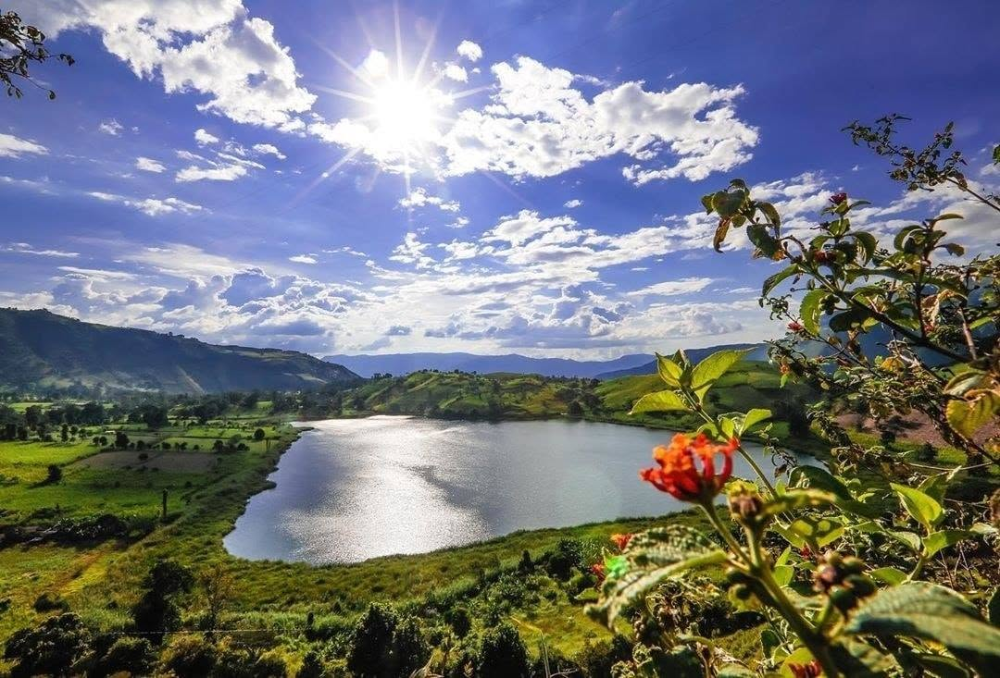

Laguna de Ortices
Es un enigma natural suspendido sobre las montañas de Santander, un oasis de agua templada que desafía la lógica al brotar en lo alto de un cerro, justo al borde del imponente Cañón del Chicamocha. Este místico espejo de agua combina paisajes verdes con un calor tropical inesperado, creando una atmósfera atrapante envuelta en leyendas populares sobre duendes y túneles subterráneos secretos.
Se ubica en la Vereda Buena vista.